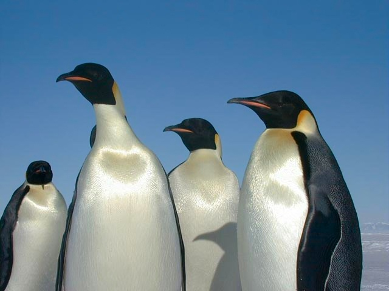
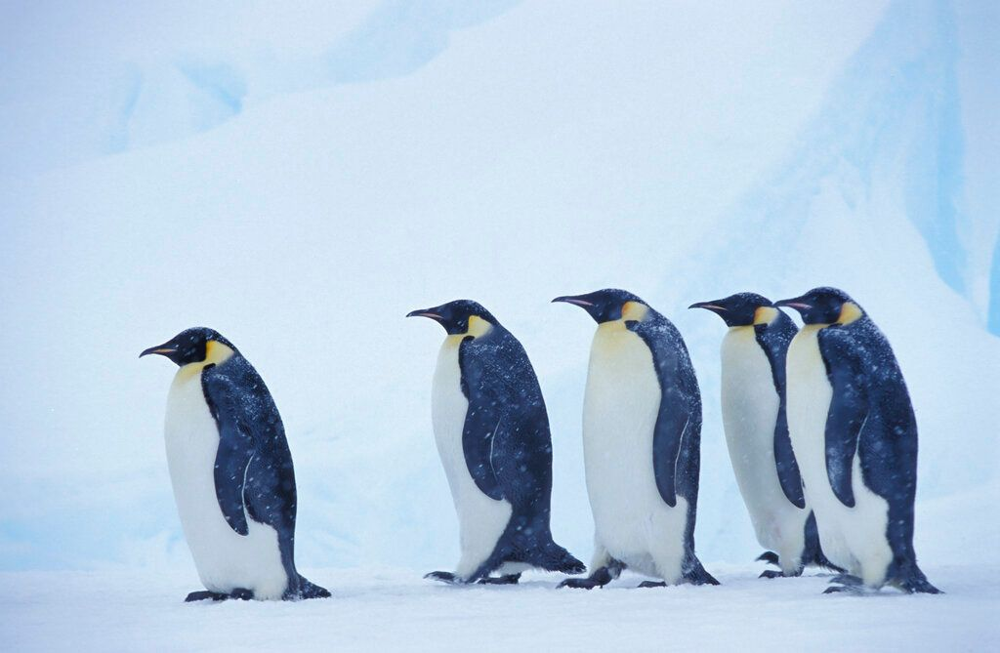
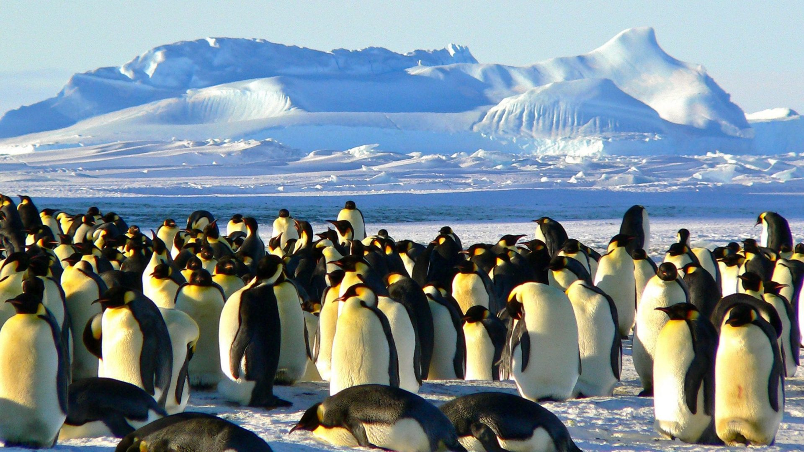
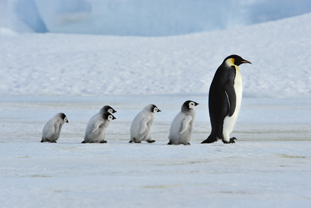

❄️
❄️
認識我
小小秘密
互動遊戲
生活影像

🆔 名字： 皇帝企鵝 (Emperor Penguin)
🏠 住址： 全地球最冷的南極洲
🍴 愛吃： 魚、磷蝦和小烏賊
🏅 專長： 所有的企鵝中體型最大，能在酷寒中照顧蛋寶寶
🔊 點我來聽聽我的叫聲
🔍 身體特徵
● 金黃色圍巾
我的耳朵和脖子旁邊有漂亮的黃色斑塊，看起來很高貴。
● 巨大的雪地靴
北極熊的腳掌非常大，腳底還有毛，讓牠在冰上跑步也不會滑倒！
● 像潛水艇的身材
我的流線型身體讓我在水裡游得跟飛一樣快！
● 肚子育兒袋
我的腳掌上方有一層厚厚的皮褶，可以像小被子一樣把蛋蓋住保暖！
💡 點點看，找秘密！
❓
為什麼企鵝不會飛？
(點一下翻開看答案)✨ 因為我把技能都點在游泳了！
我的翅膀變成了像槳一樣的鰭，在水裡游泳比鳥飛得還快喔！
🏊♂️
我們怎麼保暖呢？
(點一下翻開看答案)✨ 大家抱在一起！
我們會幾百隻擠成一團，輪流換到中間取暖，這是我們的「企鵝取暖陣」！
🖼️ 影像牆



🎮 找找我的家

這裡到處都是白茫茫的雪，還有冰冷的海水...
請低頭找找看，哪一個積木是我的家？